{kind=link}
{kind=link}
{kind=link}
{kind=link}

Страницы авторов "Тёмного леса"
Литературный Кисловодск и окрестности
Пишите нам! temnyjles@narod.ru
Москвичи знают и любят огромный Битцевский лес, ныне имеющий статус природно-исторического парка. Это второй по величине московский парк (площадь около 2208,4 га), уступающий по размерам только Лосиному острову.
Однако если исторически Лосиный остров всегда представлял собой одно целое, то Битцевский лес состоит из объединенных в советское время бывших помещичьих имений Узкое, Ясенево, Бирюлево, Красное, Коньково, Марково, Колычево (Кленково), Знаменское-Садки и других и отмежеванных от них в ходе реформы 1861 года крестьянских земель. Соответственно, здесь отсутствовал сплошной лесной массив, а были поля и луга, перемежаемые рощами, и каждый участок земли эксплуатировался в зависимости от потребностей владельцев. Даже в окрестностях Лысой горы луг тоже не сам собой появился - у него слишком регулярные границы! Свободные пространства на территории Битцевского леса стали зарастать самосевом после присоединения их к Москве и ликвидации традиционного землепользования вместе с населенными пунктами, колхозами и совхозами, существовавшими в этом районе.
Естественно, обследование столь обширной площади сопряжено с рядом трудностей. Тем не менее, в результате походов Краеведческой группы Управления культуры ЮЗАО (М.Ю. Коробко, А.А. Спивак) вместе с биологами (Ю.А. Насимович, Е.О. Королькова и участниками форума портала "Московский Юго-Запад (uzaok.ru), а также работы с архивными документами удалось выявить ряд новых потенциальных объектов наследия, а также внести коррективы в истории существующих.
Первый неизвестный ранее усадебный парк расположен в самой северной части Битцевского леса на пересечении Балаклавского и Севастопольского проспектов (кварталы 3 и 4). Частично он даже сохранил свою историческую планировку. Люди, попадающие в лес со стороны Балаклавского проспекта, не подозревают, что идут по дорожкам парка усадьбы Марково, с XVII века принадлежавшей роду Колтовских, а в середине XIX - отставному полковнику Алексею Николаевичу Житкову (1812-1872) (кстати, ему принадлежала еще одна усадьба - Красное, находившаяся рядом с Битцевским лесом){1}. Во время проведения крестьянской реформы он был мировым посредником, то есть официальным лицом, улаживающим споры между помещиками и их бывшими крестьянами. А.Н. Житков участвовал в реализации реформы в соседних имениях, земли которых ныне входят в состав Битцевского леса, в частности в Узком - тогда этой усадьбой владел генерал-майор граф Владимир Петрович Толстой{2}.
Основные постройки Маркова располагались на территории, ныне занимаемой подстанцией и участком лесничества с бытовками. Балаклавский проспект исторически является модернизированным путем, ведущим от Маркова на восток в сторону Серпуховской дороги (позднее Варшавского шоссе). Усадьба также включала в себя лесные участки западнее и южнее. Старинных насаждений в Маркове не так много, но они присутствуют. Кроме того, здесь сохранились остатки окопов, вырытых в 1941 году в ходе сооружения Московской зоны обороны.
В Маркове берет начало левый приток речки Водянки. На нем уцелел каскад из четырех прудов, один из которых (третий сверху) спущен. Имеются обводные каналы для стока воды и два боковых вроде бы пересохших прудика. Обнаружены старые рвы, канавы. Очень старых деревьев нет (у имеющихся возраст до 100 лет).
Пруд у подстанции - Верхний Марковский. Он достаточно сильно загрязнен, но, тем не менее, зарыблен. Второй сверху пруд имеет четкие геометризированные формы, что характерно для усадебных прудов. При обследовании на одном из его берегов из земли показались куски тесаных ступеней и металлические детали. Видимо, здесь когда-то существовал спуск к воде, а возможно, и купальня.
Последний марковский пруд носит название Липняк, так как он обсажен липами. Не исключено, что первоначально на его месте было два пруда.
| 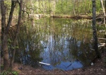 | Второй пруд в усадьбе Марково |
| 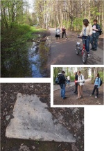 | Группа краеведов на входе в Битцевский лес со стороны Балаклавского проспекта - бывшей аллее парка усадьбы Марково Ступень от лестницы, обнаруженная на берегу пруда |
| 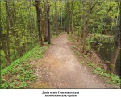 | Дамба между Севастопольскими (Козмодемьянскими ) прудами |
Южнее Маркова в 3-м квартале Битцевского леса находилась усадьба Козмодемьянское, или Кузьминки, устроенная на пустоши Козмодемьянской, она же Гридино, Дубинкино, Ждановская, Вашутино. Одно время пустошь входила в состав Маркова. По легенде, здесь некогда стояла церковь святых бессребреников Космы и Дамиана{3}. Эта версия выглядит достаточно убедительной, поскольку название Козмодемьянское могло появиться только по храму.
В качестве самостоятельной усадьбы Козмодемьянское перестало существовать в 1818 году. Тогда она принадлежала надворному советнику Якову Ивановичу Басаргину{4}. Позднее ее земли были присоединены к Маркову. Последний владелец этой части Маркова титулярный советник Иван Иванович Житницкий имел здесь сад площадью в две десятины. В 1920-х годах сад передали Зюзинскому крестьянскому комитету общественной взаимопомощи{5}.
Точное место расположения усадьбы Козмодемьянское ранее не было известно. Недавно, рассматривая карту Битцевского леса, я обратил внимание на находящийся в его центре Севастопольский пруд, названный так по Севастопольскому проспекту. Однако, несмотря на современное и явно искусственное название, пруд достаточно старый, встречается и на дореволюционных картах и имеет правильную прямоугольную фор-му{6}. Возникло предположение, что усадьба была в этой части Битцевского леса. Анализ исторических карт и натурные исследования подтвердили данное предположение.
Севастопольский пруд - искусственный водоем, в который впадает Севастопольский ручей. Последний следует называть Козмодемьянским. Пруд не очень глубокий. Согласно писцовым книгам 1619 года, здесь на Козмодемьянском ручье "бывал прудец"{7} - косвенное свидетельство существования на этом месте более раннего поселения, возможно, погибшего в Смутное время.
При ближайшем рассмотрении оказывается, что рядом находится и второй пруд (спущен), то есть в Козмодемьянском в XVIII веке было два пруда, соединенных каналами. Конечно, правильнее их именовать опять же не Севастопольскими, а Козмодемьянскими - по аналогии с другими московскими и подмосковными усадебными прудами.
Козмодемьянские пруды разделены дамбой, по которой идет дорожка, то есть можно их считать каскадными верхним и нижним. На дамбе расположены бетонные гидротехнические сооружения ориентировочно 1960-х годов. Сохранились спусковые каналы (у верхнего пруда по правому берегу, у нижнего - по левому).
Автор предположил, что усадьба находилась на правом берегу ручья, где при аэрофотосъемке просматривался ельник, явно появившийся позднее. На правом же берегу близ верхнего пруда - бывшая поляна, засаженная средневозрастным ельником. К ней ведет дорога, засаженная средневозрастным вязовником. В центре (среди ельника) был найден погибший дуб-солитер (отдельно стоящий) - ему более двухсот лет! Подобные дубы любили выращивать близ барских домов. Ельник граничит со средневозрастным березняком, а на самой границе - старые дубы и порослевые липы. У наиболее крупной - 7 стволов.
| 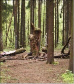 | Погибший двухсотлетний дуб |
В юго-восточной части усадьбы обнаружились длинные углубления в земле, идущие параллельно друг другу на неравном расстоянии. Это, безусловно, не окопы. На карте 1823 года здесь показаны сараи кирпичного завода, построенные в Козмодемьянском после ликвидации усадьбы, - видимо, углубления остались от них. Неподалеку растет старый (более 150 лет) дуб, рядом с ним - котлован землянки или блиндажа.
В центре Битцевского леса в районе Лысой горы выявлен межевой столб 1909 года. Он изготовлен из бетона и имеет пирамидальную форму обелиска. На лицевой поверхности - круглая выемка и цифры "1909" - дата межевания Московской губернии в ходе реализации столыпинской аграрной реформы{8}.
Поискам обелиска предшествовала работа со старожилами, указавшими его примерное местоположение. Анализ исторических карт позволяет считать, что он был поставлен на границе владений дворцового села Коньково (Коньково-Троицкое), по которому назван район ЮЗАО Москвы{9}.
Визуальный осмотр объекта показал следующее. По стилистическим особенностям и технике изготовления его можно отнести к началу XX века. Он возвышается примерно на метр над поверхностью земли. Верхняя часть отделена от нижней удивительно ровным сколом, наводящим на мысль, что обелиск изготовляли в несколько приемов (заливали опалубку как минимум дважды), отчего он и треснул практически по плоскости.
Пока все подобные обелиски (на данный момент их, помимо столба в Битцевском лесу, нами найдено семь: два в Царицыне, три в Ромашковском лесу к западу от Москвы, рядом с Кунцевом, один частично сохранившийся в Крылатском и один неподалеку от Серебряного Бора) обнаруживались только на территории бывшего Московского уезда - очевидно, в других уездах столбы были деревянными. Добавим, что бетонные межевые столбы ставились только в дворцовых владениях. Находка представляет определенный исторический интерес как в плане разработки истории ЮЗАО, так и в связи с возросшим за последние годы вниманием исследователей к личности П.А. Столыпина: ведь в официальных реестрах объектов наследия по Москве и Московской области в настоящее время нет ни одного, связанного со столыпинской аграрной реформой.
|
| Межевой столб 1909 года |
В отличие от названных выше, усадьба Бирюлево официально не исчезла бесследно. От нее уцелела подъездная липовая аллея, состоящая на государственной охране. Ныне аллея начинается со стороны Чертановской улицы и упирается в улицу Красного Маяка (усадьбы Бирюлево, Ясенево и Красное до 1970-х годов принадлежали совхозу "Красный Маяк", по которому и получила название улица). Проведенное в 2011 году вместе с биологом Е.О. Корольковой обследование позволило уточнить датировку аллеи и отнести ее к началу XX века - периоду, когда Бирюлевым владел действительный статский советник Донат Адамович Печонтковский{10}.
| 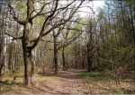 | Дубовая аллея на территории усадьбы Бирюлево |
Если мысленно продолжить подъездную аллею за территорию Чешского центра, перекрывающего проезд до Битцевского леса, она приведет нас в усадебный парк, расположенный уже на территории Юго-Западного округа в 16-м и 18-м кварталах Битцевского леса{11}. То есть остатки усадьбы административно разделены! Вот причина, по которой парк не был раньше обнаружен и описан!
Аллея пролегает по району Чертаново Центральное Южного административного округа. Районы Бирюлево Восточное и Бирюлево Западное получили названия не по усадьбе, а по железнодорожной станции Бирюлево, при которой возник поселок. Поэтому имеется определенная топонимическая путаница - усадьба была в одном месте, а одноименные районы находятся совсем в другом.
Парк усадьбы пребывает в относительно приличной сохранности и состоит из остатков дубовых аллей примерно 150-летней давности. Тогда Бирюлево принадлежало князьям Оболенским{12}. Шаг - расстояние между деревьями - примерно 8 метров. Несмотря на выпады, тем не менее, аллеи прослеживаются достаточно хорошо, ориентировка их приблизительно - запад-восток. Есть старые погибшие деревья.
Возможно, часть дубов вырубили в 1941 году, так как в северной и южной частях парка имеются линии окопов и котлованы блиндажей - остатки оборонительной линии, устроенной по Старому Бирюлевскому ручью - притоку речки Городни (Сухой Городенки).
Пологое возвышение явно искусственного характера предназначалось для беседки или павильона. Площадка наверху очень ровная, старых деревьев нет, что и правильно. Восточнее - котлованы двух прямоугольных копаных прудов, разделенных дамбой, за прудами - начало оврага (слева), отделенного от них насыпью (возможно, землей, вынутой при копке прудов). Хотя в Викимапии все это называется заброшенными очистными сооружениями туристической (лыжной) базы "Красный Маяк" ДСО "Труд", однако в подобное слабо верится, да и сама база достаточно далеко. Правда, похоже, что в 1960-1970-х годах система использовалась (в овраге лежит бетонная труба, а в одном из прудов можно видеть бетонные крышки), но, думается, она в своей основе еще усадебная. Аргумент - пруд в этом месте (на небольшом безымянном притоке Городни) показан на карте военно-топографического депо (Ф.Ф. Шуберта) 1848 года (данный факт не исключает наличия в реале и второго пруда){13}.
| 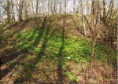 | Холм указывает на возможное место беседки или павильона |
На западном берегу ручья следов парка нет: усадьба целиком находилась на восточном. Развалившийся старый мост 1960-х (?) годов через ручей на всех картах значится как существующий, то есть погиб сравнительно недавно. Заболоченный пруд на ручье - явно бывший усадебный - расположен ниже заменившей мост современной лестницы, первоначально он явно имел другие размеры, был более крупным. Северная граница парка обсажена дубами.
При обследовании парка усадьбы Бирюлево в 2012 году биологами выявлено 78 видов сосудистых растений, в том числе четыре "краснокнижных" - ландыш, купена многоцветковая, гнездовка и медуница.
Господский дом усадьбы - кирпичное здание, ориентированное по оси север-юг, - стоял в районе пересечения подъездной аллеи и улицы Красного Маяка (являвшейся дорогой, ведущей в Бирюлево из расположенной севернее соседней усадьбы А.Н. Житкова Красное). Он и оранжерея располагались на месте домов N15 и N17 по этой улице. На карте 1964-1965 годов дом еще показан - очевидно, он дожил до ликвидации совхоза "Красный Маяк" (1974- 1978). Усадьба Бирюлево здесь отмечена как зерновое отделение совхоза. Хорошо виден большой пруд на безымянном притоке Городни, ныне оказавшийся на территории Чешского центра. Собственно, благодаря ему можно сопоставить карты современную, 1964 года и Ф.Ф. Шуберта (ориентировка последней немного сбита) и привязать господский дом к сегодняшней ситуации.
За домом находился партер, обсаженный по краям дубами и тянувшийся до Старого Бирюлевского ручья. Партер в общих чертах сохранился до настоящего времени. К сожалению, недавно на нем поставлен купол-дутик спортивного центра. Восточный берег ручья зарос самосевом, старых деревьев среди которого не выявлено, - факт подтверждающий нашу гипотезу о том, что в "усадебное" время деревья здесь были вырублены.
На этом же берегу ручья видны развалины, видимо, одной из бывших совхозных построек. На карте Мосгеотреста 1952 года ее еще нет. Справа - цоколь аналогичного здания, полностью разобранного. Неподалеку за границей северной части партера расположена турбаза. Руины формально принадлежат ей.
На территории этой усадьбы исследовалось кладбище, где испокон веков хоронили жителей Узкого и деревни Нижние Теплые Станы, входившей в состав имения. Узковское кладбище (будем называть его так по аналогии с названиями кладбищ в других населенных пунктах, включенных в городскую черту) небольшое и потому малоизвестное. Ни в каких справочниках и путеводителях по Москве оно не значится, но в списках памятников археологии Москвы отмечены "Селище и грунтовый могильник (?) у церкви <...> в Узком"{14}. Археологически они не исследовались, поэтому после слова "могильник" стоит вопросительный знак.
Кладбище существует с середины XVII века, то есть примерно со времени постройки первой церкви в Узком. Его конфигурация неоднократно менялась, в том числе и в связи с сооружением ныне существующего каменного храма Казанской иконы Божией Матери, возведенного в 1690-х годах. Могил "владельческого" характера на кладбище было немного и появились они только на рубеже XIX-XX столетий при князьях Трубецких. В 1892 году за алтарем придела Иоанна Предтечи похоронили восьмимесячную Елизавету Петровну Трубецкую - дочь владельца Узкого Петра Николаевича Трубецкого и его жены Александры Владимировны{15}, а в 1908-м - их внучку Анну Владимировну Трубецкую, не прожившую и месяца{16}. Некрополь Трубецких - свидетельство того, что этот род не собирался расставаться с Узким.
| 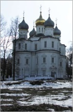 | Церковь Казанской иконы Божией Матери в Узком. |
Видимо, по соседству, за алтарями церкви находились могилы ее настоятелей. Согласно документам, там были погребены И.Я. Соколов (настоятель в 1800-1831 годах) и сменивший его на этом посту Л.М. Антушев (настоятель до 1863 года и с 1846-го - духовник местного благочиния){17}. Указанные могилы исчезли, и где точно они находились - неизвестно.
И.Я. Соколов являлся представителем целой династии священников, служивших в Узком с первых десятилетий XVII века. Их, скорее всего, также хоронили на Узковском кладбище.
Здесь имеются два захоронения, связанные с Великой Отечественной войной: могилы командира роты 693-го отдельного саперного батальона{18} лейтенанта Д.Я. Черныха, умершего от ран в Узком 26 апреля 1942 года, и саперов И.Я. Мохина{19} и С.Д. Катунина{20}, подорвавшихся при разминировании территории Узкого. Представляется странным отсутствие могил военнослужащих, которые умерли от ран в госпиталях, действовавших в Узком в 1941-1943 годах.
Удалось выяснить, что на этом кладбище был похоронен один из первых руководителей санатория "Узкое" Константин Александрович Константинович (1869-1924){21} - двоюродный брат академика В.И. Вернадского. Ежегодно (за исключением периода эвакуации во время войны) отдыхавший в Узком Вернадский в своем дневнике рассказал о К.А. Константиновиче и разорении его могилы: "Баловень семьи, <...> к которому - студенту-юристу - я, (в то время) тоже студент или молодой приват-доцент, относился с осторожностью (белоподкладочник), встречал в доме матери - кончил курс, стал помещиком (на башкирских землях), оказался первым директором и инициатором "Узкого" (где и умер) и оставил после себя самые лучшие воспоминания. Могила его в 1935 г., когда мы были в Узком, еще была. В 1937 г. плита была выброшена. В этом году (1940) я убеждал директора Петра Макар[овича] Кара-Мурзу{22} ее поставить на место. Обещал"{23}.
Но, очевидно, обещание не исполнил, иначе В.И. Вернадский отметил бы это в дневнике. В следующем году началась война, а в 1945-м скончался сам Владимир Иванович. Так могила К.А. Константиновича и затерялась...
С другой стороны, недавно введенный в оборот потенциальный объект историко-культурного наследия в Узком оказалось необходимым исключить, причем совсем не потому, что он не сохранился. Речь идет о "кладовой или погребе из старых белокаменных блоков от каких-то разобранных зданий, может быть, оранжерей"{24}. Неизвестные белокаменные здания у нас выявляются не каждый день даже в историческом центре, поэтому обнаружение нового сразу же вызвало интерес, но затем и разочарование. Оказалось, что "кладовая" построена всего лишь в 1980-х годах. Основным материалом стали пиленные белокаменные блоки, привезенные в Узкое десятилетием ранее для реставрации церкви, но не использованные и брошенные рядом с ней после завершения реставрационных работ. Блоков хватило примерно на две трети сооружения, еще треть выложили из кирпича.
Об этом курьезном образце "советского белокаменного зодчества" не стоило бы и упоминать, если б он не вошел в литературу благодаря авторам процитированного выше издания. Кстати, в 2007 году "кладовая" была оштукатурена и окрашена, как и другие усадебные строения, в желтый цвет, утратив свою "антуражность".
Здесь оказалась неучтенной находящаяся в юго-восточной части усадебного парка деревянная модерновая "Дача А.М. Коллонтай" начала XX века (среди местного населения известна и как "дом отдыха артистов"). Естественно, А.М. Коллонтай ею никогда не владела - это местная легенда, видимо, косвенно связанная с тем, что соседняя улица получила имя Инессы Арманд. По одним данным, дача сооружена в 1937 году, по другим, - раньше и входила в состав усадьбы Бутурлиных. Тем не менее, это достаточно интересный архитектурный объект, заслуживающий внимания.
| 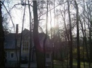 | "Дача Коллонтай" |
В советское время в даче располагался совхозный детский сад, на плане Мосгеотреста 1952 года рядом с ней показано много других деревянных построек. После сноса села Ясенева и ликвидации колхоза усадьбу и дачу с 1970-х годов занимали реставраторы: сначала Всесоюзный производственный научно-реставрационный комбинат, затем фирма "Ресма". По имеющимся сведениям, последняя сдала дачу (к сожалению, не состоящую на госохране) под жилье частному лицу, из-за чего в результате частичной реконструкции здание в значительной степени пострадало.
Конюшня в усадьбе Ясенево до 2008 года представляла собой оштукатуренный монотонный сарай без серьезных намеков на архитектуру, что делало непонятной его датировку. Лишь белокаменный цоколь, кое-где видневшийся из под штукатурки, говорил о достаточном возрасте, однако имевшие место куски советской кладки абсолютно не радовали (официальная датировка памятника - XIX век без какой либо конкретики). В 2008 году конюшню собрались реставрировать - сняли штукатурку, обтянули реставрационным "саваном", и на этом дело застопорилось.
Обследование показало: конюшня, безусловно, относится ко времени Лопухиных (середина XVIII века), поскольку значится на всех планах Ясенева, начиная с самого раннего - плана генерального межевания 1766 года{25}, то есть это одна из самых старых сохранившихся усадебных конюшен в Москве и Подмосковье. Порадовали пилястры западного фасада, в которых обнаружилось чередование кирпича и блоков белого камня. Однако капители пилястр простенькие, из одного лишь кирпича, что говорит о "местной", явно без участия архитектора, реализации проекта, явно упрощенного. Восточная стена памятника оказалась полностью новоделом 1970-х годов. Устроенный в ней дверной проем едва ли существовал изначально: в торце конюшни дверь не нужна. С запада к объекту примыкают пристройки того же периода, в их числе труба, масштабам которой могла бы позавидовать небольшая фабрика. Современный вход со стороны южного фасада отсутствовал - имелись дверные проемы на противоположном фасаде, что понятно, поскольку именно там располагался конный двор.
Другое здание ясеневского конного двора - принадлежащий подворью Оптиной пустыни маловыразительный двухэтажный кирпичный дом, который в краеведческой литературе и списках памятников, находящихся на государственной охране, ошибочно числится "домом причта". Анализ архивных документов показал: такового в Ясеневе никогда не было. Служители и священники жили в отдельных деревянных домах. Кстати, один из них, бывший дом дьякона, оказавшийся свободным после упразднения дьяконской вакансии в Ясеневе, в начале 1870-х годов купил Вадим Семенович Раич (1836-1907) - владелец фотографического заведения в Денежном переулке. В экспликации к плану Ясенева 1901 года загадочный "дом причта" обозначен следующим образом: "Людские комнаты конного двора", то есть жилье для конюхов и кучеров{26}, что совершенно логично. К сожалению, сооружение современной ограды подворья отодвигает перспективу восстановления конного двора как самостоятельного комплекса в далекое будущее.
| 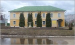 | "Людские комнаты конного двора" - здание, принадлежащее подворью Оптиной пустыни и ошибочно называемое "домом причта" |
| 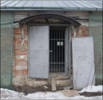 | Пилястра конюшни с чередованием белого камня и кирпича |
| 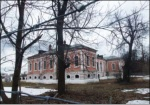 | Усадебный дом в Ясеневе |
Основной ясеневский ансамбль - господский дом и флигеля - теперь со значительной долей уверенности можно считать работой архитектора И.В. Мичурина. В своей автобиографии он говорит о доме, который построил для Лопухина{27}. Предпринятое нами исследование всех московских и подмосковных построек, принадлежавших Лопухиным в XVIII веке, позволяет утверждать, что речь шла именно о Ясеневе.
Уточняется и время сооружения ансамбля: как известно, И.В. Мичурин переехал в Москву из Петербурга в 1731 году, а в 1733-м владелец Ясенева Федор Лопухин просил разрешения на строительство в усадьбе церкви (не состоялось){28}. Эти даты можно условно считать началом и концом возведения усадебного дома. В 1924 году он сгорел. Существенной ошибкой осуществленного проекта его реставрации является восстановление здания без бельведера. По нашему мнению, анализ фотографий А.А. Губарева из ОПИ ГИМ, сделанных после пожара, убедительно доказывает: бельведер не является надстройкой XIX века, как полагали ранее, а современен основному объему. Это тем более жалко, что изменилось градостроительное положение усадьбы. Сегодня окрестности застроены с севера, юга и запада новыми панельными домами, непомерно разросшийся парк почти полностью закрывает вид новодельного господского дома, тогда как бельведер, поднявшийся над деревьями, хотя бы указывал его место.
В Знаменском-Садках на госохране, оказывается, не стоит небольшое одноэтажное каменное здание прачечной, выстроенное на рубеже XIX-XX веков в "запрудной" части усадьбы (согласно описи 1908 года, тогда за прачечной находился впоследствии исчезнувший деревянный птичник{29}. К сожалению, в Знаменском за последнее время пришел в аварийное состояние господский дом - интересный памятник классицизма, частично сохранявший уникальные интерьеры той эпохи. Усадебный парк сильно зарос, никто его не чистит, поэтому он все больше и больше превращается в лес.
В заключение хочу выразить уверенность, что перечисленное выше - отнюдь не последние находки в Битцевском лесу, и продолжение изысканий даст возможность выявить здесь новые неизвестные ранее объекты историко-культурного наследия.
Все фотографии, кроме оговоренной, выполнены автором в 2007-2012 годах.
{2} Коробко М.Ю. Красный - значит красивый //Южные горизонты. 2001. N3. С. 10; Он же. Усадьба Узкое. Историко-культурный комплекс XVII-XX веков. М., 1996. С. 67.
{3} Скворцов Н. Уничтоженные в Московском уезде церкви. М., 1905. С. 25-26.
{4} О нем см.: ГАРФ.Ф. 279. Оп. 1. Д. 1312. Л. 1-2 об.; Степанов В.П. Русское служилое дворянство 2-й половины XVIII в. СПб., 2000. С. 84-86.
{5} Ведомость о переходах земель и недвижимых имений в Московском уезде в 1901 году. М., 1901. С. 21.
{6} РГАДА.Ф. 192. Оп. 1. Д. 251; Ф. 1282. Оп. 1. Д. 515. Л. 1; Д. 518, Л. 1.
{7} Ярославцева С.И. Девять веков юга Москвы. Между Филями и Братеевом. М., 2008.
{8}Об этом подробнее см.: Джунковский В.Ф. Воспоминания. Т. 2. М., 1997.
{9} Коробко М.Ю. Коньково // Московский журнал. 2011. N11. С. 16-29; Он же. Парки в лесу // Московское наследие. 2012. N24. С. 25.
{10} Ипполитова А.Б. Предыстория Чертановской улицы и окрестностей // Москвоведение. 1999. N3. С. 21-22.
{11} РГАДА.Ф. 1354. Оп. 256. Д. 14 "Б", "К".
{12} Нистрем К. Указатель селений и жителей уездов Московской губернии. М, 1852. С. 18.
{13} РГАДА.Ф. 192. Оп. 1. Д. 235, 251; Ф. 1282. Оп. 1. Д. 515. Л. 1; Д. 518, Л. 1.
{14} Каталог памятников археологии второй половины XIII-XVI веков на территории Москвы (Чернов С.З. Домен московских князей в городских станах. 1271-1505 годы //Культура средневековой Москвы. Исторические ландшафты. М., 2005. С. 520).
{15} ЦИАМ.Ф. 203. Оп. 777. Д. 141. Л. 137 об.-138. Е.П. Трубецкая (27 января - 11 сентября 1892) родилась и скончалась в Москве. Подробнее о П.Н. Трубецком см.: Коробко М.Ю. Московский предводитель / Московский журнал. 2011. N9. С. 2-22.
{16} А.В. Трубецкая (5-23 декабря 1908) - старшая дочь Владимира Петровича и Марии Сергеевны Трубецких, родилась и скончалась в Москве (В.П. Трубецкой был старшим сыном П.Н. и А.В. Трубецких). См.: Troubetzkoy S.G., Bouteneeff S.C. (archpriest), Troubetzkoy A.S. Our family's album. A geneological and photographic chronical of the descendance of Prince Nikolai Petrovich Troubetzkoy. Sea Cliff, New York, 1995. С. 53.
{17} ЦИАМ.Ф. 203. Оп. 744. Д. 2246. Л. 60 об.; Д. 2353. Л. 407об.-409.
{18} 24-й армии Московской зоны обороны Северо-Западного фронта.
{19} 1897 года рождения.
{20} 1903 года рождения.
{21} К.А. Константинович в 1890-х гг. служил в земстве Аккерманского уезда Бессарабской губернии, с 1904 г. был непременным членом Уфимского губернского присутствия по крестьянским делам. Владел землями в Стерлитамакском уезде Уфимской губернии. Умер и похоронен в Узком у церкви, место погребения неизвестно.
{22} Кара-Мурза П.М. (1876-?) - директор "Узкого" в 1936-1953 гг.
{23} Вернадский В.И. Дневники 1935-1941. Кн. 1. 1935-1938. М., 2006. С. 44.
{24} Памятники архитектуры Москвы. Окрестности старой Москвы (юго-восточная часть и южная части города). М., 2007. С. 308.
{25} РГАДА.Ф. 1354. Оп. 256. Д. 2 "Я".
{26} ЦИАМ.Ф. 303. Оп. 2. Д. 249; Коробко М.Ю. Москва усадебная. Путеводитель. М., 2005. С. 326-327.
{27} Михайлов А. Архитектор Д.В. Ухтомский и его школа. М., 1954. С. 30. См. также: Коробко М.Ю. Культурное наследие самодуров z/Московское наследие. 2012. N21. С. 15.
{28} ОПИ ГИМ.Ф. 402. Ед. хр. 5. Л. 102; ЦИАМ.Ф. 203. Оп. 753. Д. 566; Холмогоровы В.И. и Г.И. Исторические материалы о церквах и селах XVI-XVIII вв. Вып. 8. Пехрянская десятина. М., 1892. С. 58.
{29} Коробко М.Ю. Москва усадебная... С. 115.
Последнее изменение страницы 17 Jun 2019
{kind=link}
{kind=link}
{kind=link}
{kind=link}
{kind=link}
{kind=link}
{kind=link}
{kind=link}